Mustang
69' Mustang Boss 302
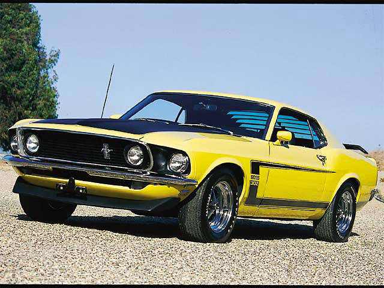
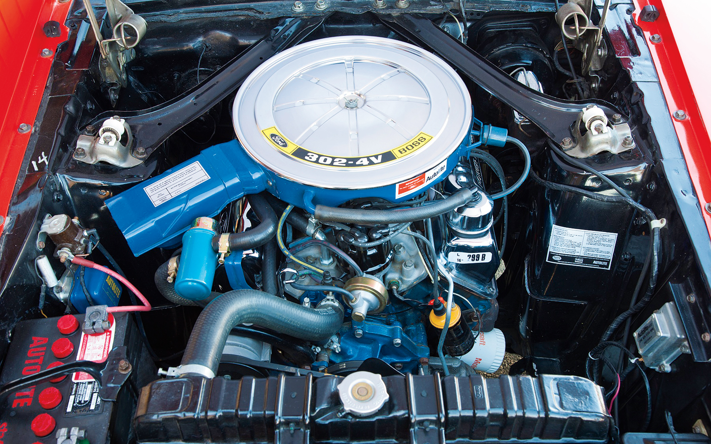
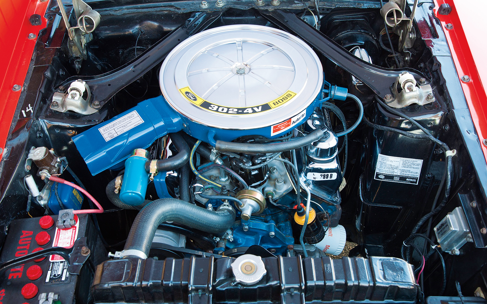
Trans Am racing in 1969 was a big race in America. Ford wanted make a comeback car against Chevy Camaro Z28, so Ford hired Larry Shinoda (Former lead designer for Corvette) to design a car with an 302 cubic inch engine called "the Boss' car"
69' Mustang Boss 429
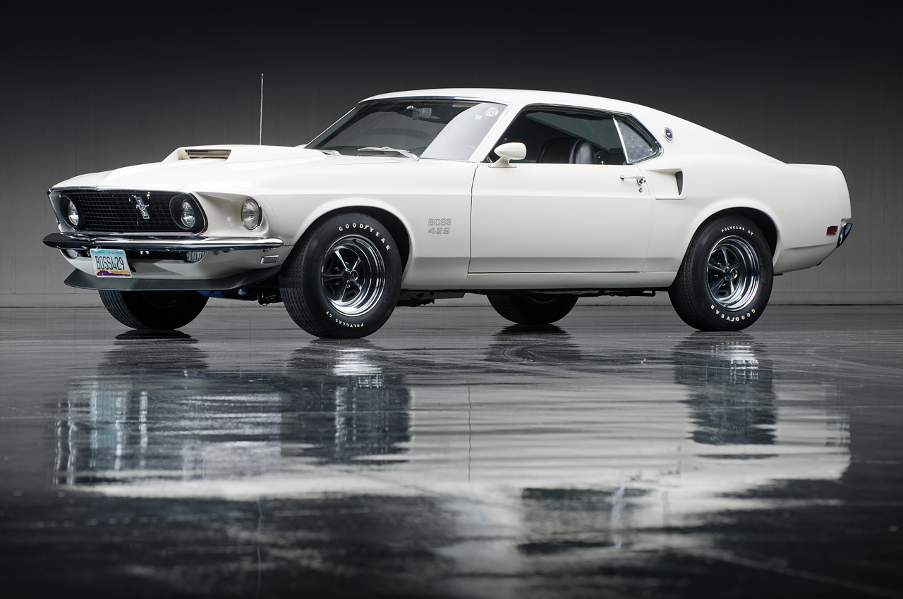
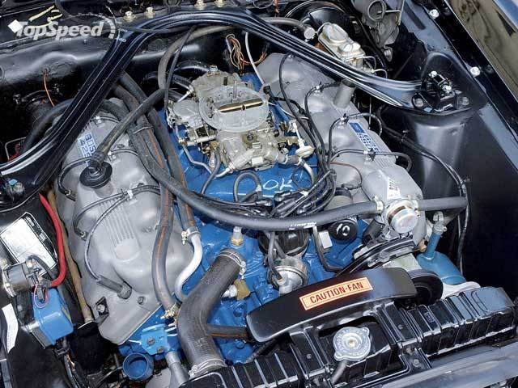
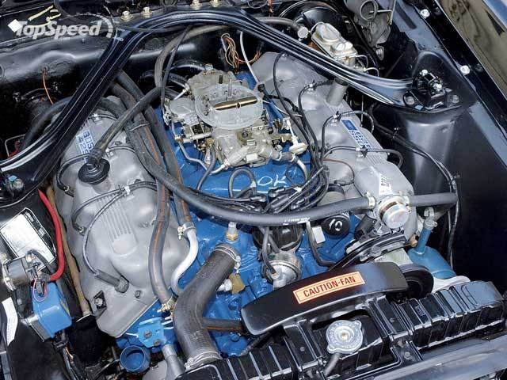
The most famous racing in America, the Nascar racing, was another big race beside Trans Am racing. Ford's competitor this time is the Chrysler Hemi 426. Ford had a 429 engine in the Torino race car but the Nascar rule said
69' Mustang Mach 1
 for Phil Johnston.jpg)
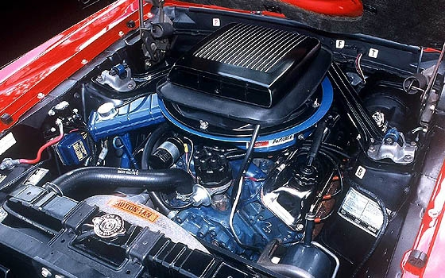
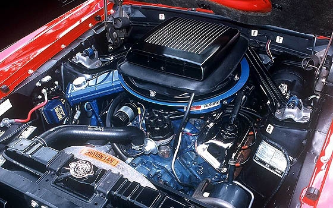
69' Mustang Shelby GT500
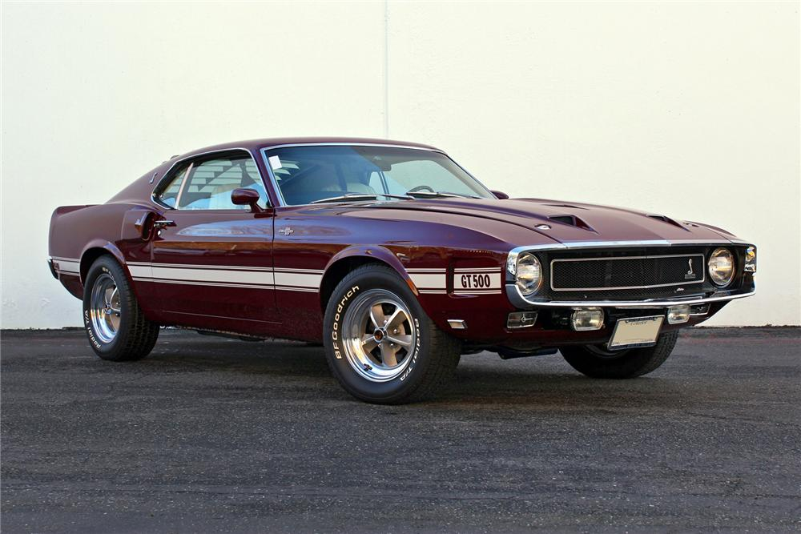
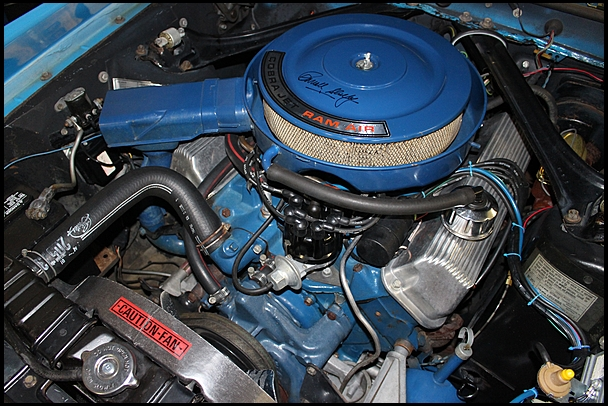
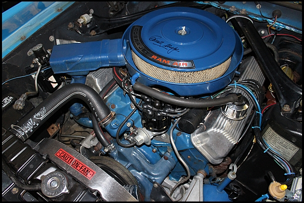